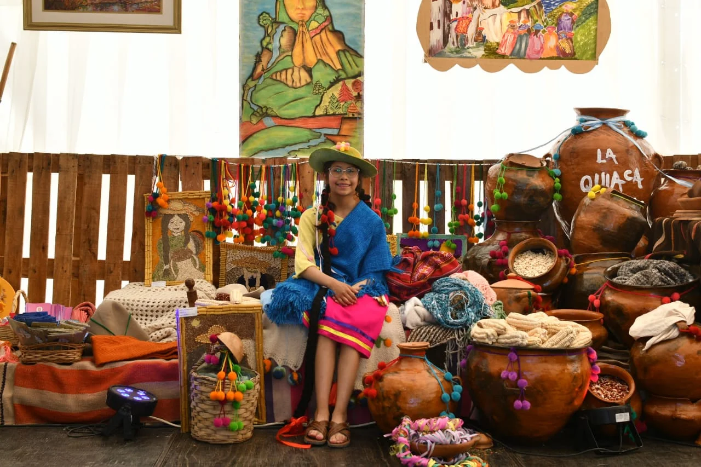
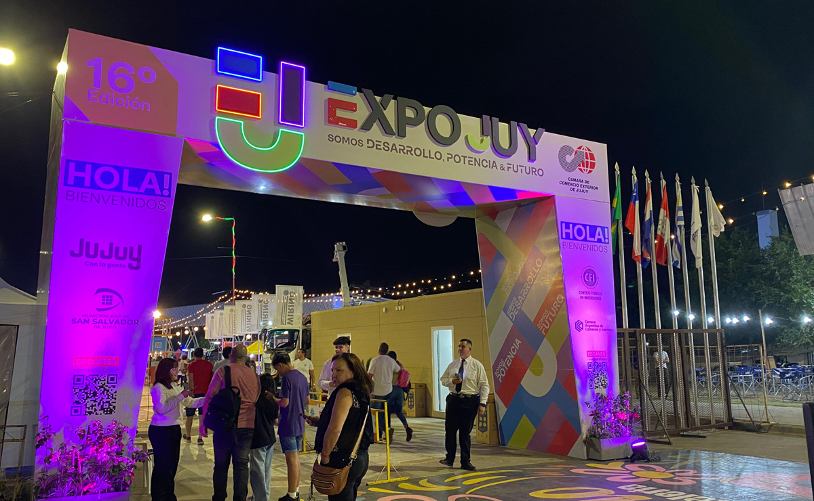
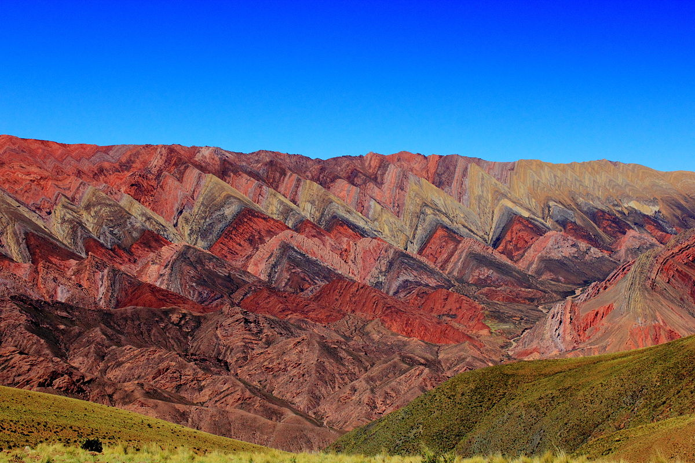

01 / 05 · EL ORIGENTodo empieza
Todo empieza
con alguien
que hace.
Saberes, trabajo y producción local. Las personas dan forma a lo que Jujuy tiene para compartir.
PRODUCCIÓN · AGROINDUSTRIA · CULTURA
Industria, innovación, cultura y oportunidades.
Un lugar para conectar, crear y crecer.

ExpoJuy reúne producción, industria, comercio y servicios en un espacio de encuentro entre empresas, instituciones y visitantes.
Una exposición para conocer las capacidades de Jujuy y explorar nuevas conexiones con la región.
Encontrá tu lugar en la Expo ↗Saberes, trabajo y producción local. Las personas dan forma a lo que Jujuy tiene para compartir.
PRODUCCIÓN · AGROINDUSTRIA · CULTURA
Industria, minería y servicios. Un espacio para descubrir procesos, capacidades y nuevas formas de producir.
INDUSTRIA · MINERÍA · SERVICIOSTecnología, energías renovables y economía del conocimiento: otras maneras de pensar el desarrollo.
TECNOLOGÍA · ENERGÍA · CONOCIMIENTOComercio, logística e integración regional. Conectar capacidades para abrir conversaciones y oportunidades.
COMERCIO · LOGÍSTICA · INTEGRACIÓN
Del 9 al 12 de octubre, en Ciudad Cultural. Conocé los sectores y empezá a preparar tu visita.
EXPOJUY 2026 · SAN SALVADOR DE JUJUYExplorá los rubros de la propuesta.
El directorio oficial de expositores se publicará una vez confirmado.
8 sectores para explorar
Un espacio para conocer capacidades industriales. Empresas y ubicaciones pendientes de confirmación oficial.
Producción y transformación de alimentos y materias primas. El padrón de expositores todavía no está disponible.
Actividad minera y servicios vinculados. La presencia de empresas se informará con el directorio oficial.
Soluciones y tecnologías energéticas. Expositores y actividades por confirmar.
Software, servicios y economía del conocimiento. La selección de participantes se incorporará al directorio oficial.
Productos, servicios y vinculación empresarial. Información comercial de participación pendiente de publicación.
Transporte y servicios para el intercambio regional. Participantes y propuestas por confirmar.
Oficios, productos y expresiones locales. La programación y los espacios se publicarán cuando estén aprobados.
No encontramos sectores con esa búsqueda.
Consultá cada jornada.
La programación oficial está pendiente de publicación.
Estamos esperando la agenda oficial de esta jornada. Acá vas a poder consultar horarios, actividades y ubicaciones.
San Salvador de Jujuy, Argentina.
Del 9 al 12 de octubre de 2026.
Se informarán con la guía oficial de visita.
El plano con stands, servicios y recorridos accesibles estará disponible cuando sea aprobado.
Modalidades y disponibilidad pendientes de confirmación. Este prototipo no realiza ventas ni acreditaciones.
Elegí cómo querés participar.
Conocé la fecha y la sede. Las condiciones de ingreso se publicarán cuando estén confirmadas.
Ver información de visita ↗El canal oficial para consultar espacios y condiciones de participación está pendiente de validación.
Las modalidades de vinculación y participación institucional se incorporarán con la información de la organización.
Las acreditaciones de prensa, el dossier de patrocinio y sus contactos se publicarán por canales oficiales.
Un lugar para seguir las novedades de la próxima edición.
Las comunicaciones oficiales se incorporarán aquí. No hay novedades cargadas en este prototipo.
Espacio reservado para sponsors y acompañantes confirmados, respetando sus categorías oficiales.
Del 9 al 12 de octubre de 2026, en Ciudad Cultural, San Salvador de Jujuy.
Este prototipo no tiene venta habilitada. Las modalidades de entrada y acreditación están pendientes de confirmación oficial.
El directorio permitirá consultar empresas por rubro y ubicación. Mientras se confirma el padrón, podés explorar los sectores de la propuesta.
Explorar sectores ↗La guía oficial deberá informar accesos, servicios y recorridos accesibles. Esa información todavía no está disponible en el prototipo.